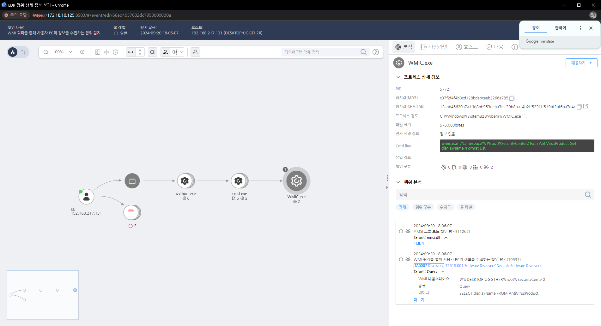

T1518.001.06 시스템에 설치된 백신 프로그램 검색(WMI)
D3FEND
MITRE ATT&CK 액션을 기준으로 대응 방안을 작성
Detection
WMI 쿼리를 통해 사용자 PC의 정보를 수집하는 행위를 탐지하였습니다.
Detection(EDR)

Response
비정상적인 시스템 정보 수집 시도를 탐지하고, 실시간 로그 분석을 통해 의심스러운 활동을 신속히 차단한다.
Mitigations
애플리케이션 계층 프로토콜 모니터링 (M1047 - System Logging & Monitoring)
- 로그 및 네트워크 트래픽 모니터링을 통해 의심스러운 애플리케이션 계층 프로토콜 통신 탐지
- IDS/IPS(침입 탐지 및 방지 시스템)를 활용하여 HTTP, FTP, SMB 등의 프로토콜을 통한 소프트웨어 탐색을 실시간으로 감지
- Event ID 5156 (Windows Filtering Platform) 로그를 활용하여 애플리케이션 계층 트래픽을 모니터링
소프트웨어 및 애플리케이션 버전 관리 (M1027 - Password Policies)
- 애플리케이션 버전 정보 노출 방지: 웹 서버나 애플리케이션에서 버전 정보를 숨기거나 비활성화하여 공격자가 버전 정보를 쉽게 파악하지 못하도록 설정
- 서비스/애플리케이션의 불필요한 버전 정보를 제거하고, 최신 패치 및 업데이트를 주기적으로 적용
- 소프트웨어 및 애플리케이션의 보안 설정을 강화하고, 버전 정보가 포함된 HTTP 응답 헤더를 수정하거나 제거
애플리케이션 계층 프로토콜 접근 제어 (M1031 - Network Segmentation)
- 네트워크 세분화를 통해 중요한 애플리케이션 및 서비스에 대한 외부 접근을 제한
- 방화벽 규칙 설정을 통해 애플리케이션 계층 프로토콜의 무분별한 접근을 차단
- 애플리케이션을 실행하는 서버에 대한 접근을 제한하고, 내부 네트워크만 해당 애플리케이션에 접근할 수 있도록 구성
불필요한 서비스 및 애플리케이션 비활성화 (M1042 - Disable or Remove Feature or Program)
- 불필요한 서비스나 애플리케이션을 비활성화하여 공격자가 탐색할 수 있는 항목을 줄임
- 애플리케이션 계층 프로토콜을 통한 정보 수집을 방지하려면 FTP, SMB, Telnet 등의 서비스는 가능한 한 사용하지 않도록 설정
- 서비스와 포트 비활성화: 사용하지 않는 프로토콜의 포트는 방화벽에서 차단하거나 서비스를 비활성화
애플리케이션 보안 강화 (M1040 - Security Configurations)
- 애플리케이션의 취약점 스캔 및 보안 패치 적용
- 애플리케이션에 대한 보안 강화: 필요에 따라 방화벽, IDS/IPS와 같은 추가 보안 장비를 사용하여 애플리케이션 레벨에서 발생할 수 있는 공격을 차단
- 애플리케이션 보안 검토 및 취약점 분석을 주기적으로 실시하여 공격자가 악용할 수 있는 부분을 미리 수정
Affected Techniques
Action 실행시 함께 영향을 받는 다른 Techniqes
| D3FEND |
| D3-SCA System Call Analysis |
| D3-PM Platform Monitoring |